操作说明书预览软件介绍
应用背景：本软件面向汽车空调系统与噪声振动工程人员，服务于鼓风机风量挡位设计、结构模态频率核对和试验准备。实际工作中，某一挡位附近出现明显嗡声时，工程师需要把风机转速、叶片通过频率、旋转阶次和壳体或风道模态放在同一转速范围内检查。单独查看某个频率或只调整一个挡位，容易遗漏其他阶次的交叉，也难以说明调整前后使用了哪些参数。
软件概述：软件将项目、激励阶次、结构模态、挡位方案和验证任务组织为可保存的设计对象。用户可从空白录入，也可通过CSV批量输入；中央设计图显示阶次线、模态敏感带和挡位位置，右侧属性与对象树联动，底部用于查看明细、交叉转速、约束扫描、方案比较、验证记录和规则敏感性。整个工作流始终保留图和当前对象，不使用顶部模块切换。
基本流程是建立项目并说明来源，录入阶次和模态，建立挡位方案，核对计算结果，调整或扫描候选，比较方案，记录验证事项，保存重开并导出成果。软件使用C#和MVVM结构，界面通过本机服务与浏览器运行，所有项目输入内嵌保存。
适用范围是前期频率位置筛查与工程记录。频率接近仅表示潜在风险，不说明真实共振已经发生；软件不读取波形，不预测声压、结构响应幅值、风量或效率。模拟示例只验证公式和操作，不能作为实际车辆效果的证明。
启动与认识工作台
前提：安装.NET SDK 10.0.403及同版本允许的最新补丁，使用支持现代网页的浏览器。在项目目录打开终端，先执行dotnet build BlowerResonance.sln，再运行run.sh；Windows可双击run.bat。终端显示服务已监听后，打开http://127.0.0.1:5178，保持终端运行。也可在Visual Studio中打开解决方案并选择Blower.App启动；本次仅实跑Linux与Chromium。
首次进入显示空白项目。左侧是项目资源及对象树，中央是当前设计画布，右侧是选中对象属性。顶部“保存项目”“重新计算”和撤销重做用于当前工作；底部结果区在有效输入后出现。中央空白提示会列出缺少的阶次、模态或方案。
左侧“项目文件与成果”是可展开文件菜单。点击“载入模拟示例”或中央“查看模拟示例”会请求离开当前未保存项目；如果已经输入内容，应取消并先应用属性、保存。需要继续自己的项目时选择“打开项目库”。
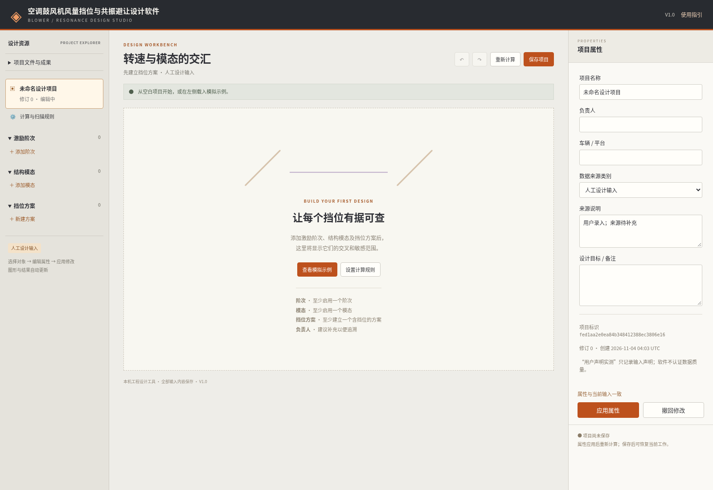
图1 启动与认识工作台（真实运行界面；模拟设计数据）建立项目与属性草稿
从左侧文件菜单选择“新建空白项目”。如确认弹窗出现，先核对是否存在未保存工作。选中左侧项目名称，在右侧依次填写项目名称、负责人、车辆或平台、数据来源类别、来源说明和设计目标。名称不能为空，最多一百六十个字符；来源说明必须能让后续复核人员知道参数来自哪里。
人工设计输入用于尚未验证的设计值；模拟设计数据用于演示或假设；用户声明实测只记录用户声明，不认证测量。模态还拥有独立来源类别与说明，因此项目与模态来源不一致时，质量复核会提示，报告保留每个模态来源。不要通过改项目来源把模拟模态写成实测。
填写后点击“应用属性”。属性草稿通过完整项目校验后才进入计算输入；失败会指出对象、字段与原因，原项目保持不变。右侧“撤回修改”仅撤回尚未应用的属性。切换对象时若仍有草稿，系统会提示是否放弃；新增、保存、扫描与导出则会要求先应用或撤回。
本手册手工案例使用项目名称“手工核对·40叶片”、负责人“验证工程师”、平台“模拟平台”，来源说明填写“端到端手工模拟数据；不是真实试验”。后续每个对象也应保留这一模拟性质。应用后项目标识和修订号可用于追溯，不能把标识或文件生成时间当作开发完成或首次发表日期。
配置激励阶次
在左侧“激励阶次”下点击“添加阶次”，新对象立即进入右侧属性。填写便于识别的名称，选择轴旋转阶次或叶片通过倍频，输入倍数，并填写激励依据或待验证事项。点击“应用属性”后，启用的阶次进入计算和图例，停用项保留在项目但不参与组合。
轴旋转阶次直接使用输入倍数，例如一阶等于每转一次；叶片通过阶次等于叶片数乘输入倍频。例如四十叶片、一倍频的有效阶次为四十，二倍频为八十。允许输入零点一至一百之间的倍数，支持分数轴阶次。右侧显示有效阶次与公式，帮助检查是否误把叶片数量再次乘入。
手工案例只需一个名为“叶片通过BPF”的叶片通过一倍频。BPF在此指叶片通过频率，其计算是转速乘叶片数再除以六十。启用有效阶次不得重复，若轴四十阶与四十叶片一倍频同时启用会被拒绝，避免组合数重复。实际是否存在该激励以及幅值多大仍需测量。
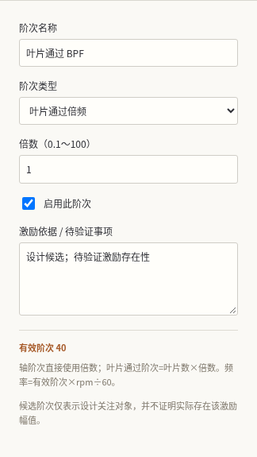
图2 配置激励阶次（真实运行界面；模拟设计数据）录入结构模态
在“结构模态”下点击“添加模态”。右侧填写模态名称、频率、可选阻尼比、附加敏感半宽、结构位置、启用状态与来源信息。频率单位为赫兹，允许零点一至五万；阻尼比采用小数，零点零二表示百分之二，允许零至零点一；未知请留空，明确为零与未知分别保存。
来源说明应包含测试或仿真文件编号、安装边界及可复现条件。结构位置用于帮助安排测点。附加敏感半宽单位也是赫兹，取值零至五千，可用于明确的模态频率不确定范围；它与全局规则取最大值，不作无说明的叠加。
手工案例填写“壳体M1”、六百赫兹、阻尼比零点零二、附加半宽零，结构位置“壳体外侧”，来源“模拟六百赫兹模态”。点击应用后，图中出现紫色敏感带。属性草稿中的范围只是预览，应用前不会改变正式图和结果。轻阻尼带宽近似在相互重叠模态情况下可能不适用，应结合来源条件复核。
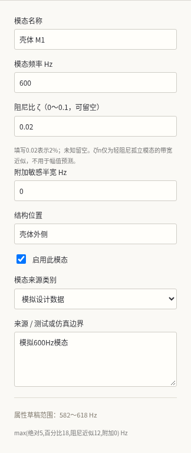
图3 录入结构模态（真实运行界面；模拟设计数据）设置计算规则和扫描约束
选择左侧“计算与扫描规则”。先填写风机叶片数以及分析转速上下限，叶片数要求一至二百的整数，转速范围允许零至五万转每分钟且上限大于下限。改变叶片数会同时改变所有启用的叶片通过阶次，应用前应检查是否形成重复有效阶次。
默认绝对敏感半宽五赫兹、相对半宽百分之三，启用阻尼近似半宽，转速容差正负二十转每分钟。模态总半宽取绝对项、相对项、可用阻尼项和该模态附加半宽的最大值。默认值属于本软件工程设定，不代表法规或标准。
候选扫描使用最小挡位间距、扫描窗口、步长和偏移权重。默认分别为一百、正负二百五十、二十五转每分钟和零点一五。窗口围绕每挡原转速，步长网格从零转速对齐，原始点也会参与。填写后点击应用；若挡位因新范围或间距不再满足要求，整次修改被拒绝。
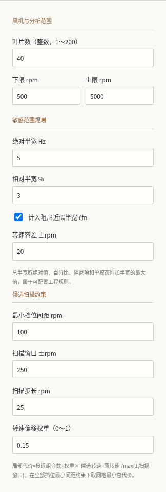
图4 设置计算规则和扫描约束（真实运行界面；模拟设计数据）建立方案与编辑挡位
在“挡位方案”下点击“新建方案”，填写方案名称和说明并应用；再点击该方案下的“添加挡位”。右侧输入挡位名称、目标转速、扫描时是否固定以及备注。挡位按列表顺序递增，必须满足分析范围和最小间距。不能把较低转速直接填入后一个挡位而破坏顺序；应先设计满足约束的相邻挡位。
手工案例建立“手工基准”，添加第一挡并改为九百转每分钟，再添加第二挡并改为一千八百。四十叶片一倍频分别为六百与一千二百赫兹。每次应用后，中央图、底部结果和对象树的转速立即更新。右侧可核对每个启用阶次对应的中心频率。
图上方挡位标签和虚线可点击，选中后右侧变为该挡位属性；左侧挡位按钮提供同样入口，也可用键盘聚焦图中对象并按回车。方案属性中的“锁定挡位”用于防误改；锁定后需要先解除锁定才能编辑挡位，但仍可复制方案以建立候选。
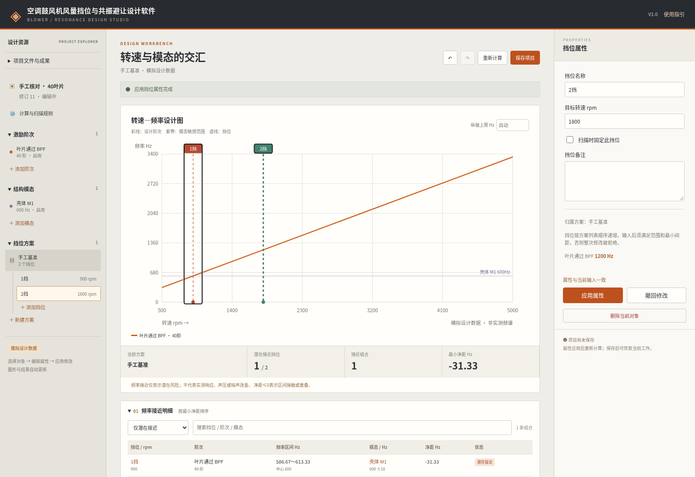
图5 建立方案与编辑挡位（真实运行界面；模拟设计数据）阅读设计图与交叉结果
有效输入建立后自动计算，也可点击“重新计算”。中央彩色斜线是设计阶次，紫色横带是模态敏感范围，挡位虚线贯穿图形。红色挡位表示至少一个组合潜在接近，绿色仅表示当前规则内未接近；图不是实测频谱。图例按钮可选中阶次，模态横带可选中模态。
展开底部“交叉与敏感转速范围”，核对每个模态与阶次的精确交叉以及计入转速容差后的敏感范围。精确交叉是模态频率乘六十再除有效阶次。分析范围之外的交叉保留原值并显示范围外，避免误以为它不存在。纵轴上限可以手工输入，例如一千五百赫兹，以放大低频区域；留空恢复自动范围。
模拟示例中的六百赫兹模态、四十阶的精确交叉为九百转每分钟。默认半宽十八赫兹、转速容差二十转每分钟时，敏感转速为八百五十三至九百四十七。模态范围依据逐项列在表下，可检查是哪一规则决定半宽。
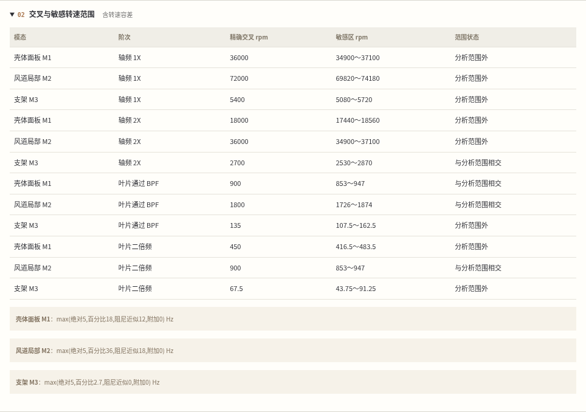
图6 阅读设计图与交叉结果（真实运行界面；模拟设计数据）核对接近明细与无效输入
底部“频率接近明细”默认只列潜在接近组合，按最小净距排序。可改为“全部组合”，或按挡位、阶次、模态名称搜索。点击挡位或模态名称可定位右侧属性。表内同时给出转速、有效阶次、激励中心和容差频率区间、模态频率与敏感半宽。
净距是两个区间之间的带符号间隔；零表示接触，负值表示重叠深度，正值表示分离。净距不是声音大小，也不是概率。组合数按照挡位、阶次和模态对象分别计数，模态敏感区重叠时不能把这些组合解释为独立能量。
验证参数时，在挡位目标转速填入负一并应用，会显示范围错误，原转速仍保留。若输入导致相邻挡位间距不足，也会指出方案和挡位。检查右侧“属性草稿需修正”以及中央状态条；把数值改回合法范围后重新应用，或点击撤回修改。软件不会用零填补错误，也不会部分应用失败的项目修改。
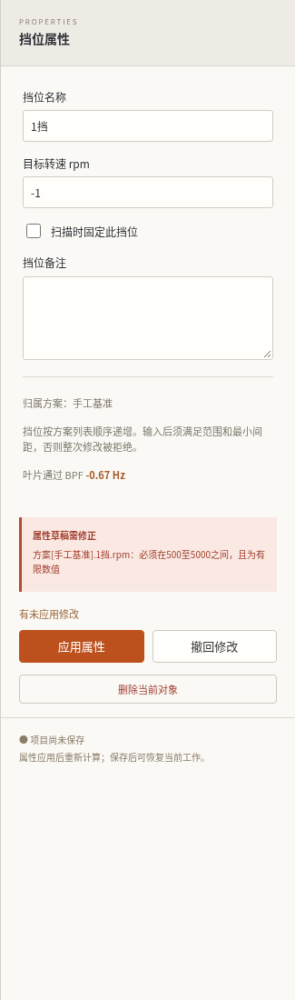
图7 核对接近明细与无效输入（真实运行界面；模拟设计数据）扫描约束内候选转速
先选中需要调整的方案，确保右侧草稿已经应用。展开底部“约束扫描”，检查当前窗口、步长和最小间距；需要修改时点击“编辑扫描约束”，在右侧填写并应用，再回到扫描区点击“扫描当前方案”。扫描中按钮显示状态，结束后列出每挡原转速、候选转速、偏移、接近组合数和局部代价。
局部代价为接近组合数，加上偏移权重乘转速偏移绝对值与窗口之比。软件在网格中寻找满足全部挡位间距的最小总代价；固定挡位保持原转速。扫描不包含连续空间的全部可能，也没有风量、效率和声压目标，不能把候选当作最佳降噪挡位表。
核对候选表后点击“采纳为新方案”。原方案保持，新增方案名称含“扫描候选”，左侧自动选中新方案。无可行解时不生成候选，应检查窗口、固定挡位和间距。每挡候选超过六百零三点时会要求增大步长或缩小窗口。原始计算输入变化后需重新扫描，旧预览不会被直接采纳。
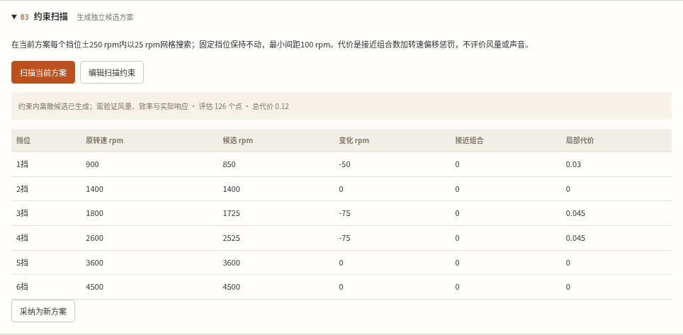
图8 扫描约束内候选转速（真实运行界面；模拟设计数据）比较两个挡位方案
左侧选中的方案作为比较基准。在底部展开“方案比较”，从下拉框选择另一个目标方案。可先在方案属性点击“复制当前方案”并修改副本，或使用扫描候选。比较区显示两个方案的接近挡位数与组合数，并逐挡列出转速及组合计数。
转速差使用目标减基准，正值代表目标转速增加，负值代表减少。挡位按方案内序号对应，而不是根据相似名称猜测。若方案挡位数不同，缺失位置不计算转速差，界面提示不能把总组合变化直接解释为改善。
所有方案共用当前阶次、模态和规则，所以此处比较的是同条件下的挡位设计。需要改变模态或结构边界进行比较时，应复制独立项目，分别保留报告和输入。即使接近组合减少，也要核对风量覆盖、效率、实际振动和声音，软件不自动给出“通过”或“降噪”结论。
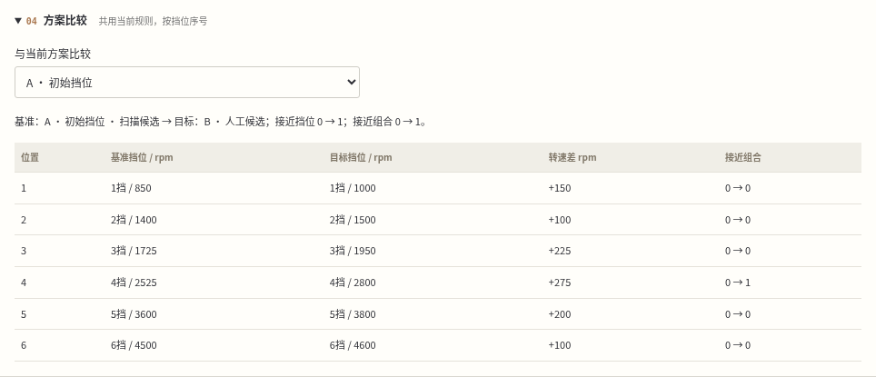
图9 比较两个挡位方案（真实运行界面；模拟设计数据）生成并维护验证清单
选中需要验证的方案，在底部“验证清单”点击“生成验证清单”。软件从当前方案潜在接近组合建立任务，重复点击不会重复建立相同组合；当前没有接近组合时不会凭空生成任务，但仍应安排其他性能验证。每条任务关联原方案、挡位、阶次和模态。
点击任务卡片，右侧显示验证方法、负责人、状态和证据位置。方法初稿包含候选转速、频率以及需要记录的安装、温度、仪器和测点条件；应按实际试验计划补充。选择“已记录证据”时必须填写证据位置或记录，不能空着保存。软件只记录用户填写，不认证证据真伪或试验结论。
输入条件发生变化后，原先完成的任务自动改为“需复核”；选择该任务，按新输入检查证据后再更新。删除仍有验证引用的模态、阶次、方案或挡位会被阻止，应先核对是否保留记录；确需删除时先删除相关验证任务。删除与批量修改仍可在会话内撤销。
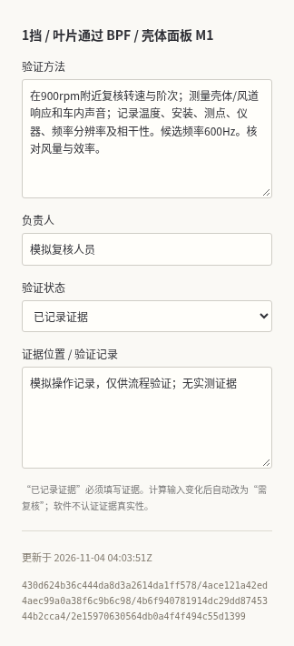
图10 生成并维护验证清单（真实运行界面；模拟设计数据）规则敏感性与输入质量复核
展开底部“规则敏感性与质量复核”。分别输入一至五个绝对半宽值和一至五个转速容差值，用英文逗号分隔，例如“5,20,40”和“0,20,50”，点击“试算规则组合”。软件在输入克隆上形成九种组合，当前项目参数保持不变。
表内列出每种规则的接近挡位、接近组合、相对原规则的状态变化数、最小净距和挡位名称。其他半宽项保持当前设置，因此绝对半宽变小不一定改变结果。试算用于理解结果对假设的依赖，不建议通过放宽规则消除标记。可导出敏感性CSV，输入改变后需重新试算。
同区的质量复核检查模拟来源、未知阻尼、来源不一致、缺少位置、重叠敏感区、全部固定挡位和需复核证据等情况。每条发现给出对象和建议操作，可回到对象树或验证卡片修正。未发现条目也不代表已经认证数据质量，仍应核查原始来源和实际安装边界。
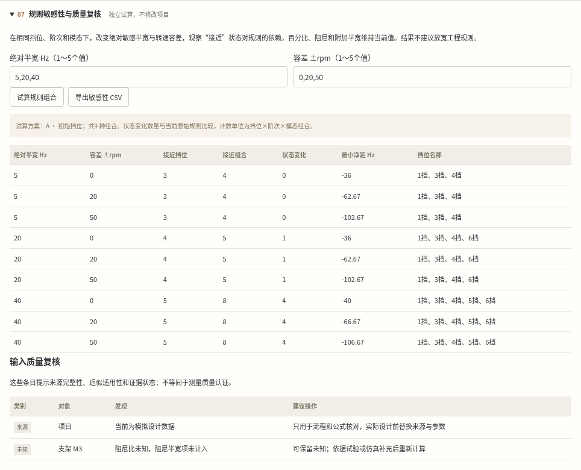
图11 规则敏感性与输入质量复核（真实运行界面；模拟设计数据）CSV批量输入与预检
从左侧文件菜单打开“导入与成果输出”，展开“批量输入CSV与预检”。先下载挡位或模态模板，也可直接在CSV内容区编辑。文件使用UTF-8、英文逗号和小数点，第一行必须为界面显示的固定英文表头。支持引号转义，不支持单元格跨行。
挡位表头为name,rpm,fixed，fixed只能写true或false；模态表头为name,frequency_hz,damping_ratio,source，阻尼未知留空。先选择输入类型，再从文件载入或粘贴内容，点击“预检CSV”。例如把rpm写成abc时，界面显示第二行数值错误，项目不发生修改。
修正为合法数值后重新预检，检查解析对象数量和预览，再点击“应用预检结果”并确认。挡位批次新增独立方案，模态批次追加，均不静默覆盖旧对象。文本或项目计算输入变化后必须重新预检；若新增对象触发数量上限、间距或字段错误，整批拒绝。
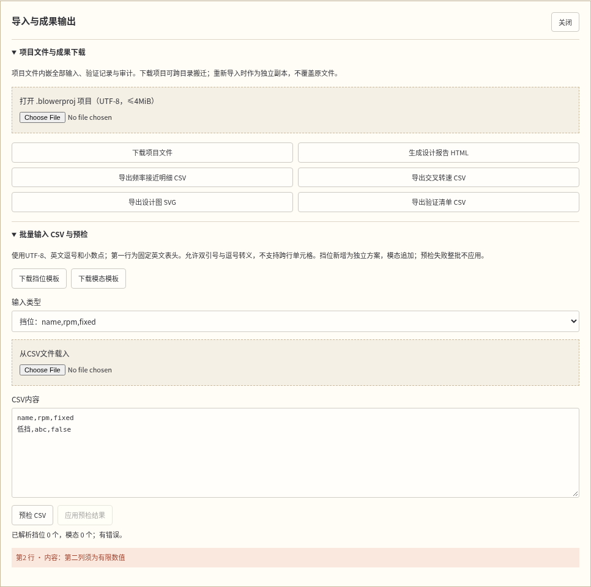
图12 CSV批量输入与预检（真实运行界面；模拟设计数据）保存、重开、备份与归档
先应用右侧草稿，再点击中央“保存项目”。状态条会显示服务器本机保存路径。默认项目库在Blower.App目录下的.project-library，可由启动环境变量BLOWER_PROJECT_ROOT指定。保存包含所有输入、来源、方案、验证和审计，不依赖最初CSV文件位置。
在左侧文件菜单选择“打开项目库”，找到名称与修订，点击“打开”，界面从保存输入重新计算。每次覆盖保存会保留上次内容，选择“上次备份”载入后先核对再保存。其他会话已修改同一文件时会拒绝覆盖，应先下载当前草稿，再重开或复制独立项目，避免丢失对方工作。
“复制为独立项目”建立新项目标识，保留复制来源；“归档项目”使属性只读，需要继续设计时选择“解除归档”。浏览器会话不是自动持久存储，退出前必须保存。未保存时离开或替换项目会提示，但浏览器异常终止不能保证草稿恢复。
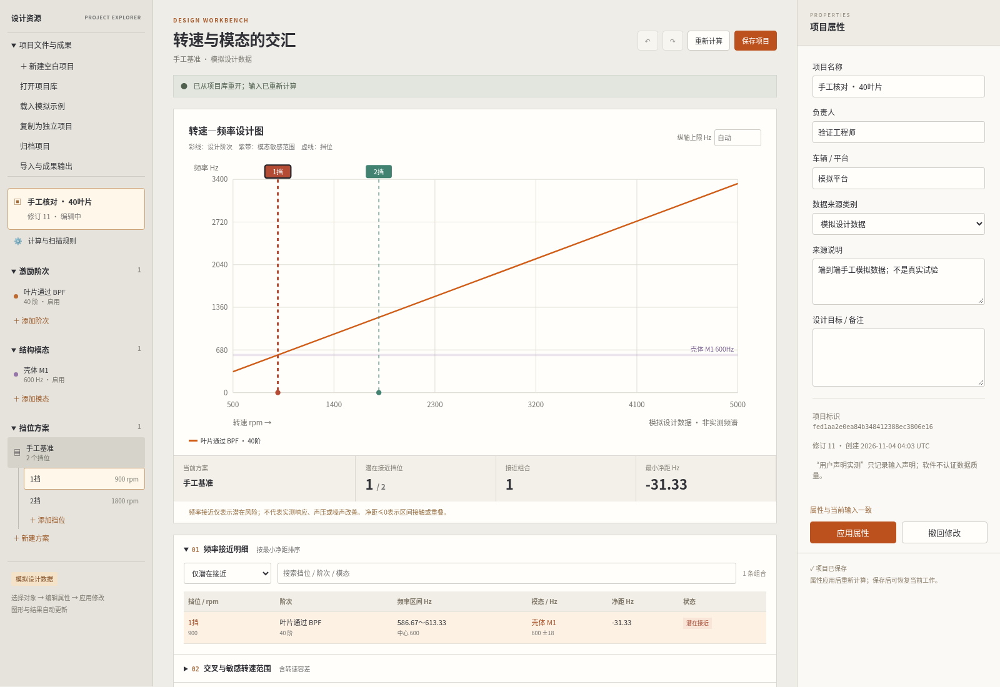
图13 保存、重开、备份与归档（真实运行界面；模拟设计数据）成果导出与可搬迁项目
打开左侧“导入与成果输出”。点击所需成果按钮后，系统生成一个有效二十分钟的下载链接；再点击绿色“下载”链接，文件进入浏览器下载目录。项目文件扩展名.blowerproj，内部schema为一；项目下载可在另一目录或本机服务实例重新导入，导入后作为独立副本打开。
设计报告为自包含HTML，包含项目与来源、规则、阶次与模态、所有方案、设计图、敏感依据、接近明细、交叉、验证及审计，可在离线浏览器打开或打印。SVG用于矢量设计图；频率接近明细、交叉转速和验证清单使用CSV。检查导出中的版本、来源、单位及输入哈希，模拟标签必须保留。
下载项目后，用本区“打开.blowerproj项目”重新上传，核对原始方案和验证记录是否存在。文件损坏、未知格式、重复字段、缺少必填项或引用不一致时会拒绝打开，原工作保留。输入尚未应用时软件要求先处理草稿，防止输出与屏幕编辑不一致。
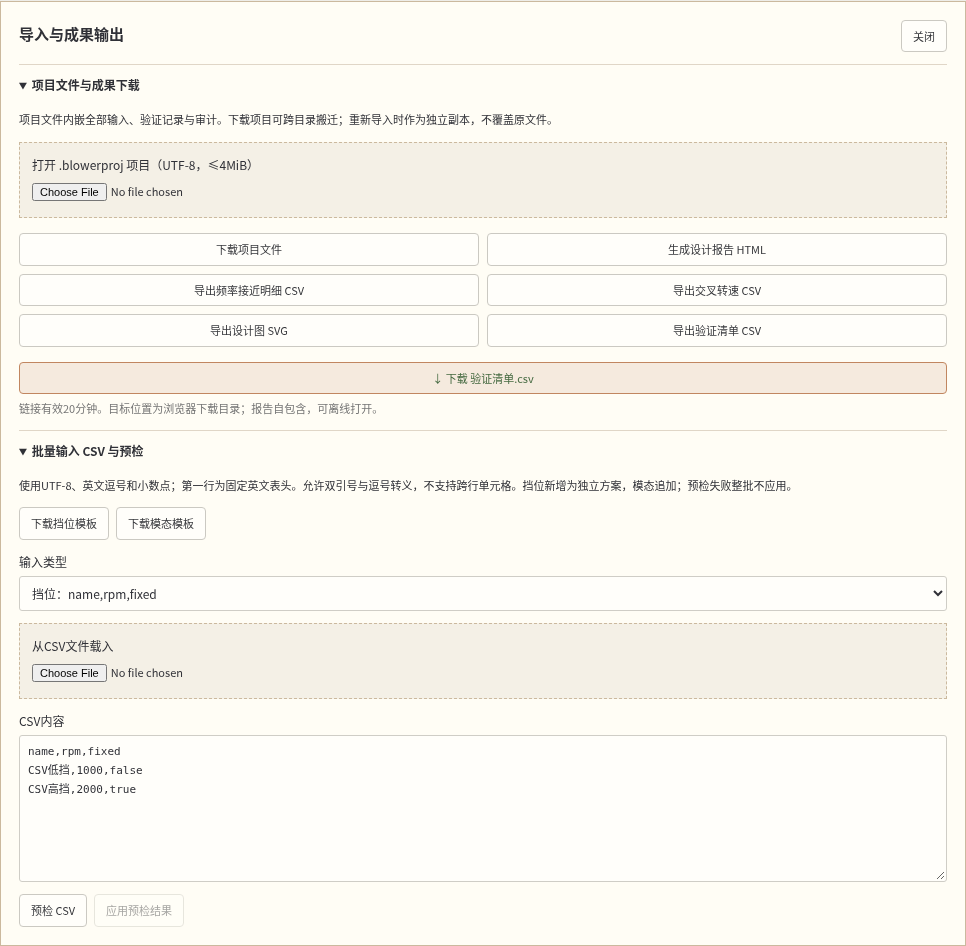
图14 成果导出与可搬迁项目（真实运行界面；模拟设计数据）完整可核对案例
从空白建立模拟项目，叶片数四十，分析范围五百至五千转每分钟，绝对半宽五赫兹，相对半宽百分之三，启用阻尼项，转速容差正负二十，最小挡位间距一百。建立叶片通过一倍频、壳体模态六百赫兹和阻尼比零点零二，再建立九百及一千八百转每分钟两个挡位。每个对象依次应用。
预期第一挡激励中心六百赫兹，区间五百八十六点六六六七至六百一十三点三三三三；模态半宽十八赫兹，区间五百八十二至六百一十八；净距负三十一点三三三三，标记潜在接近。精确交叉九百转每分钟，敏感转速区八百五十三至九百四十七。第二挡中心一千二百赫兹，与单个六百赫兹模态分离。
复制当前方案，在副本把第一挡改为一千转每分钟，第二挡仍一千八百。应用后第一挡中心六百六十六点六六六七赫兹，容差区间六百五十三点三三三三至六百八十赫兹，净距三十五点三三三三，在当前规则外。选择原方案作为基准比较，第一挡差为正一百转每分钟。该变化只证明频率位置改变，不证明风量或噪声改善。
回到原方案生成验证清单，填写计划负责人，保持待验证状态。保存项目并从项目库打开，再下载项目与设计报告。检查报告仍标记模拟、两个方案和原始规则均在，且第一挡公式结果一致。内置模拟示例还包含其他阶次和模态，预期初始方案三挡位接近、四组合，不应与本页单模态案例的组合数混用。
常见问题、缩放与交接
图形为空时查看中央缺项说明：至少启用一个阶次、一个模态，并建立一个有挡位的方案。修改转速范围失败时，检查已有每个方案的全部挡位，而不仅当前选中挡位。无法删除对象时，展开验证清单检查引用任务；方案无法编辑时，先选中方案检查锁定状态。
导入报错时，按具体字段或行号修复，确认英文表头、编码、小数点以及true/false。阻尼未知须留空；把百分之二写成二会超出范围，应写零点零二。下载过期时重新点击生成，不需要修改原项目。找不到保存文件时先查看状态条路径与启动环境变量，确认打开的是同一个服务实例。
窄屏时右侧属性移动到中央内容下方，左侧树保留滚动；表格在自身范围内横向滚动。可展开或收起底部结果，避免一次显示所有表格。交接时一并提供项目文件、报告、原始数据来源说明和验证证据；本软件不代替原始试验归档。操作手册与软件版本均为V1.0。软著身份和日期仍待申请人确认，Microsoft Word实际分页需在正式申报前核实。
图15 常见问题、缩放与交接（真实运行界面；模拟设计数据）